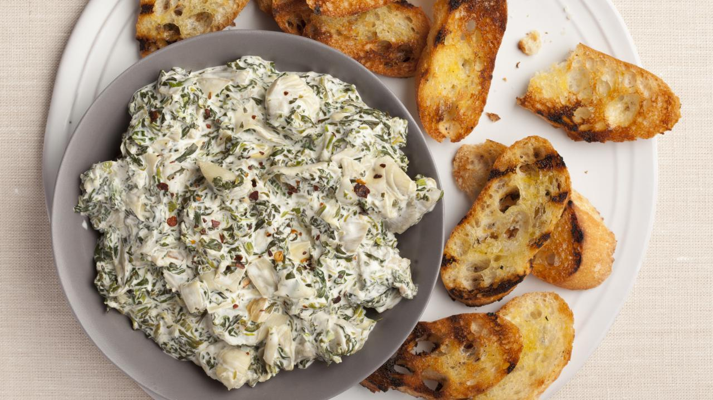

Alton Brown's Spinach & Artichoke Dip

An easy and delicious party favorite
This Spinach & Artichoke dip is insanely easy and delicious. It's always my go-to for potlucks or
appetizers for parties - guests always rave about it and I've been requested
to make it on multiple occasions. Watch out, though...it's impossible to just have
a few bites.
Ingredients
- 1 cup thawed, chopped frozen spinach
- 1.5 cups chopped artichoke hearts (I usually just do 1 can)
- 6 oz cream cheese
- 1/4 cup sour cream
- 1/4 cup mayo
- 1/3 cup grated parmesan
- 1/2 tsp red pepper flakes
- 1/4 tsp salt
- 1/4 tsp garlic powder
Steps
- Boil spinach & artichokes in water until tender & drain. Discard liquid.
- Heat cream cheese in microwave for 1 minute or until hot and soft (may splatter; cover with paper towel)
- Stir in rest of ingredients & serve hot.